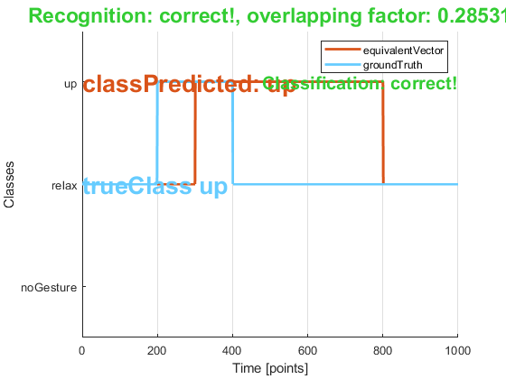

Contents
%example_dataset11Gestures uses evalRecognition library to evaluate a %repetition using the dataset of 11 gestures. %{ Laboratorio de Inteligencia y Visión Artificial ESCUELA POLITÉCNICA NACIONAL Quito - Ecuador autor: z_tja jonathan.a.zea@ieee.org "I find that I don't understand things unless I try to program them." -Donald E. Knuth 18 May 2022 Matlab 9.11.0.1873467 (R2021b) Update 3. %}
información de la repetición (no depende del modelo) (es parte de los datos)
repInfo.gestureName = categorical({'up'});
repInfo.groundTruth = false(1, 1000); % 1000 xq 200 Hz por 5 segundos
repInfo.groundTruth(200:400) = true;
predicción
Resultado que entrega un modelo entrenado
response.vectorOfLabels = categorical({'relax', 'relax', 'relax', 'up', 'up', 'relax'});
response.vectorOfTimePoints = [40 200 300 600 800 999]; %1xw double (entero)
% con un tic toc.
% tiempo de procesamiento (segundos)
response.vectorOfProcessingTimes = [0.1 0.1 0.1 0.1 0.1 0.1]; % 1xw double
% no necesariamente depende del vector de arriba
response.class = categorical({'up'}); % adivinamos q es waveIn
r1 = evalRecognition(repInfo, response)
Warning: Not default gesture named "noGesture" found in vector of labels.
Try changing the default name with the defaultGesture option in
evalRecognition(...,...,evalOptions).
Common default names are "relax" and "noGesture".
If you want to stop viewing this warning, reset the showWarning option, view
help.
r1 =
evalRecognition with properties:
classResult: 1
recogResult: 0
overlappingFactor: NaN
defaultGesture: noGesture
thresholdRecognition: 0.2500
showWarning: 1
defaultGesture
Se necesita cambiar el nombre del gesto por defecto. De lo contrario el reconocimiento no se calcula correctamente.
evalOptions.defaultGesture = 'relax'; fprintf('Resultado al arreglar gesto por defecto\n') r1 = evalRecognition(repInfo, response, evalOptions)
Resultado al arreglar gesto por defecto
r1 =
evalRecognition with properties:
classResult: 1
recogResult: 1
overlappingFactor: 0.2853
defaultGesture: relax
thresholdRecognition: 0.2500
showWarning: 1
r1.plotResults()